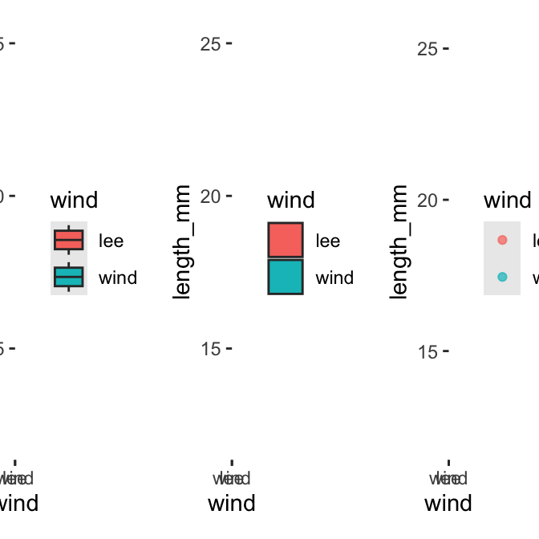

Project Design & Graphing Data
Projects and ggplot
In RStudio:
- click
file-open projectand select the2025_UMD_BioStats_Student_Code.Rprojfile or double click on it in the finder or data explorer. - your screen will now change as RStudio knows where home is

Note that in the upper right you will see
2025_UMD_BioStats_Student_Codeso you know you are in the right spotNow click File - New File - Quarto File

Create a file that starts with
02_and then something that will help you know what is going on like02_class_activity_in_class.qmdNow this file thinks this is home.
So I usually copy stuff for the header from another file as its just too hard to remember all this…
---
title: "Title of your file" # Title of the file
author: "Your Name" # who you are
metadata-files:
- ../../_templates/lectures.yml
metadata-files:
- _templates/activities.yml
format:
html:
freeze: false
toc: false
default: true
embed-resources: true
self-contained: true
default: true
toc: false
toc-depth: 3
number-sections: false
highlight-style: github
reference-doc: ms_templates/custom-reference.docx
embed-resources: true
---Exercise 2: Creating a Histogram


Key Insights from Histograms:
The histogram helps us understand: - The overall distribution of needle lengths - Potential differences between windward and leeward needles - Presence of any unusual values or outliers
Exercise 3: Creating Multiple Plot Types
Let’s explore different ways to visualize the same data:
# Box plot
box_plot <- p_df %>%
ggplot(aes(x = wind, y = length_mm, fill = wind)) +
geom_boxplot()
# Violin plot
violin_plot <- p_df %>%
ggplot(aes(x = wind, y = length_mm, fill = wind)) +
geom_violin()
# Dot plot
dot_plot <- p_df %>%
ggplot(aes(x = wind, y = length_mm, color = wind)) +
geom_jitter(width = 0.2, alpha = 0.7)
# Display all plots using patchwork
box_plot + violin_plot + dot_plot
Questions to Consider:
- Which plot type best reveals patterns in our data?
- What are the advantages and disadvantages of each plot type?
- How might we combine elements from different plot types?